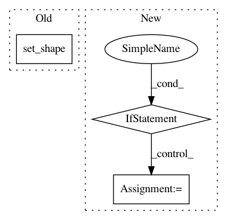

1ccad186fd950b77dab771686200fc4a23bc0c2c,keras/backend/tensorflow_backend.py,,Switch,#Any#Any#Any#,1852
Before Change
x = _cond(condition,
lambda: then_expression,
lambda: else_expression)
x.set_shape(x_shape)
return x
def in_train_phase(x, alt):
After Change
return then_expression
else:
then_expression_fn = then_expression
if not callable(else_expression):
def else_expression_fn():
return else_expression
else:
else_expression_fn = else_expression
x = _cond(condition,
then_expression_fn,
else_expression_fn)
return x
In pattern: SUPERPATTERN
Frequency: 3
Non-data size: 3
Instances
Project Name: keras-team/keras
Commit Name: 1ccad186fd950b77dab771686200fc4a23bc0c2c
Time: 2017-01-10
Author: francois.chollet@gmail.com
File Name: keras/backend/tensorflow_backend.py
Class Name:
Method Name: Switch
Project Name: NifTK/NiftyNet
Commit Name: 6992caa3647b784d6652e2ed0c85d9e6e6ada077
Time: 2017-10-05
Author: carole.sudre.12@ucl.ac.uk
File Name: niftynet/layer/loss_segmentation.py
Class Name:
Method Name: dice_nosquare
Project Name: keras-team/keras
Commit Name: b688192cbd74495c9907b6dcfce47e9a582ae1af
Time: 2016-01-31
Author: francois.chollet@gmail.com
File Name: keras/backend/tensorflow_backend.py
Class Name:
Method Name: rnn